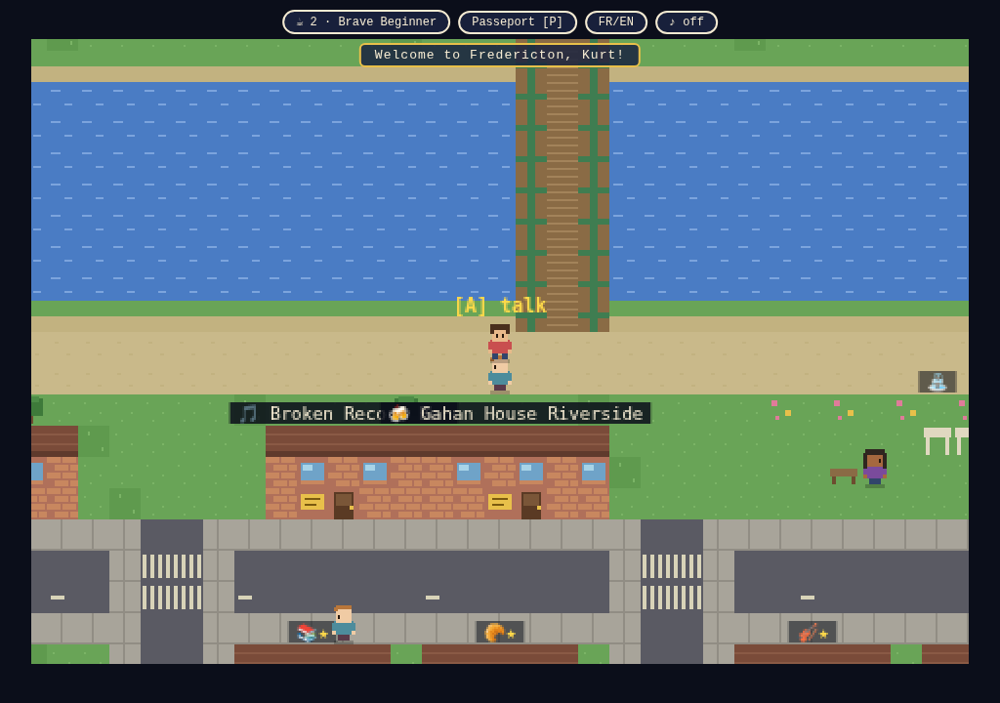
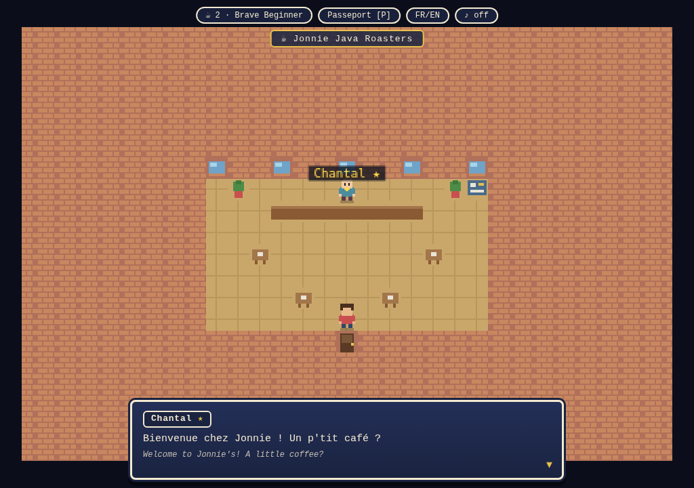
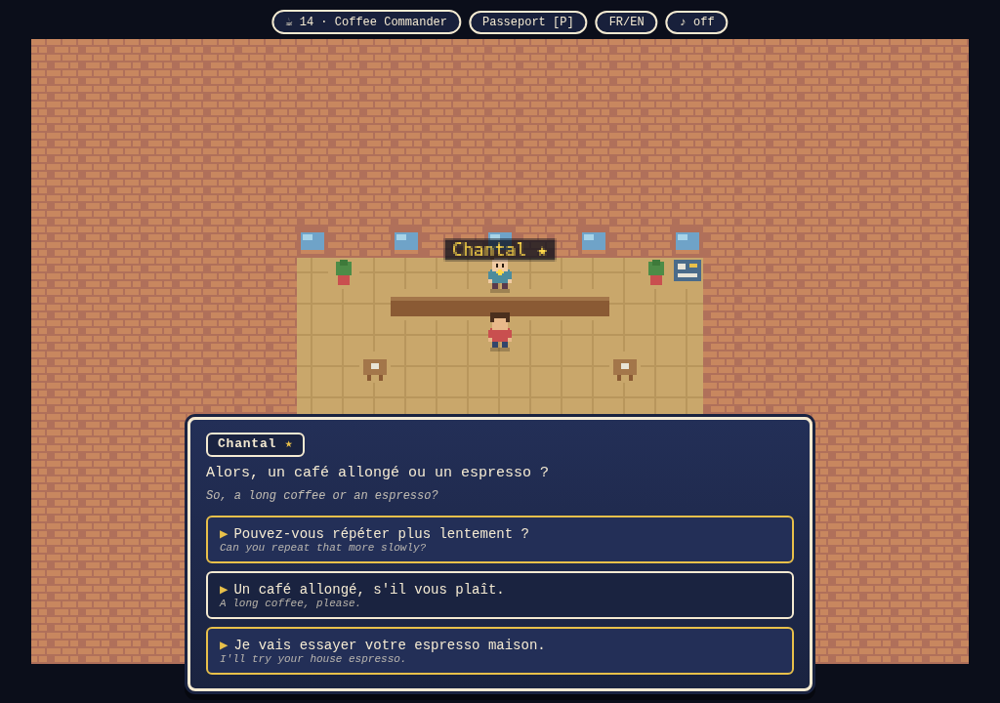
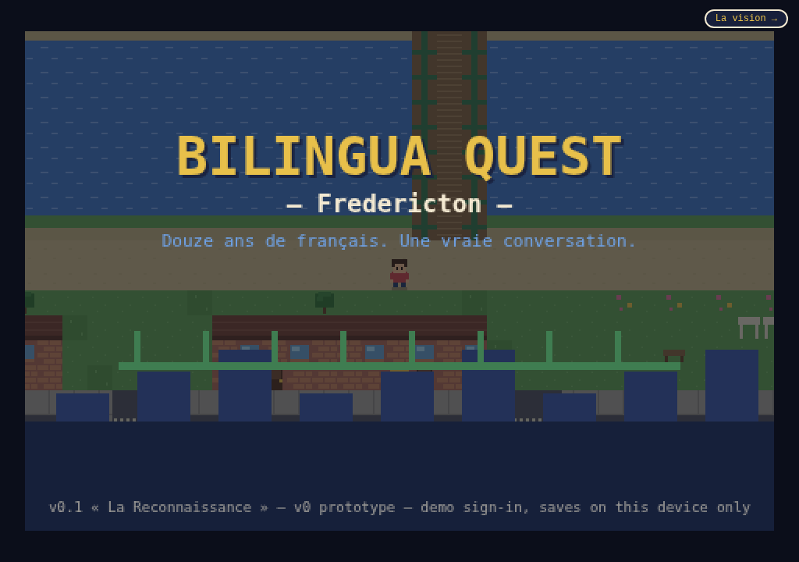

« Douze ans de français. Une vraie conversation. »
Twelve years of school French. Time for one real conversation.
▶ Jouer / PlayFree · plays in your browser · adults 18+ · prototype v0.5 · invitation only — the founding batch is 100 · billets

Bilingua Quest is a cozy 16-bit game whose map is the real city. You make a character and walk out onto the Green. The river is the Wolastoq. The bridges are the Westmorland and the old green walking bridge. Queen Street has Wilser's and the Gahan House; King Street has Dolan's and Flippins; the Boyce Market is on George Street where it belongs, and if you cross to the northside you'll find bubble tea on Main. Every venue opens its door, and inside, someone speaks French to you.
And here is the whole trick: every conversation succeeds. The bravest reply earns the warmest reaction, but « Pouvez-vous répéter plus lentement ? » is always on the menu and always welcomed. In this town, your terrible French is not a problem to fix. It's the game.
New Brunswick teaches French better than anywhere in the country — and then provides nowhere safe to speak it. The barrier isn't vocabulary; it's the social cost of speaking badly in front of a real person. Anxiety kills the willingness to open your mouth, and the skill dies of disuse.
Language anxiety dies in play. In a game, a wrong attempt is a turn — not a verdict.
That's the product: a state of play, where the things that hold learners back simply don't exist in the rules. No grades, no failure states, no embarrassment physics. Just a town that's happy to see you try.
Explore downtown and the northside, tile by tile. Real venues, real streets, real bridges — drawn with love, 16 pixels at a time.
Short, playful conversations in French with English subtitles. Three choices per turn. All of them work. Confidence — the game's only currency — goes up.
Points fill your meter, but only an Hôte — a gold-star francophone mentor — can name you to your next level, in a small ceremony. People unlock people.



Even the map obeys the idea: the bridges to the northside are closed until an Hôte has named you « Commandeur·e de café ». Your first level-up literally opens more city.
Every language app measures you with an algorithm. Bilingua Quest hands that power to people: francophone mentors — in the game today, real volunteers tomorrow — whose recognition is the only way up. A level granted by Chantal over a real counter means something no XP bar can fake. And being an Hôte is designed as an honour: gold star, your name on the venue, capped seats. Francophones aren't "content" in this game. They're the nobility.
The endgame is the real city. Every venue has a rendez-vous board — conversation nights, bilingual trivia, concerts, la Fête nationale de l'Acadie at Officers' Square. Today those are samples; the plan is real listings, so the game funnels players to actual tables in actual cafés, safely and in public.
The future layer: scheduled, watchable, celebratory live practice — TikTok-live energy where being brave in French is the show. Picture Thursday 7pm at Dolan's, in-game and in-person at once: players cheering a stranger's first full sentence, an Hôte conducting, clips worth sharing. Language practice as an event you'd actually attend.
Playable Fredericton, mentor ceremonies, seasons, this page. Tell us everything.
Real rendez-vous listings, real Hôte volunteers, RSVP from inside the game.
Matched practice with humans behind a safety-first trust ladder; meetups in public venues.
« When Moncton unlocks… » City by city, a game people visit the province to play.
Like any good dinner party. You can't download your way in — someone has to hand you an invitation, and every invitation comes from a real person. The founding batch is exactly 100: most are held by Hôtes, the francophone mentors, who give them the way they give recognition — one at a time, to people who would try.
And the only way to earn invitations of your own? Be named. The moment an Hôte names you to your first level, you receive three — because the town should grow exactly the way confidence does: person to person, by recognition. (Every number here is true, always. No fake counters, ever.)
From an Hôte, from a friend who was named, or from the waitlist below.
Play until an Hôte names you « Commandeur·e de café ».
Your Passeport now holds three invitations. Choose well.
Francophones: skip the line — write "Hôte?" in the last field and we'll talk about handing you keys to the city.
This is a prototype and a vision looking for accomplices — players, francophone mentors, café owners, skeptics. What would make you play? What's wrong? What's missing? En français ou en anglais.
Prefer email? kurtrgoddard@gmail.com